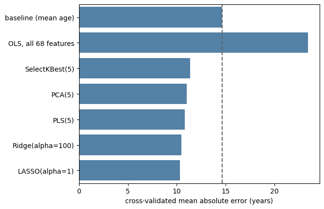
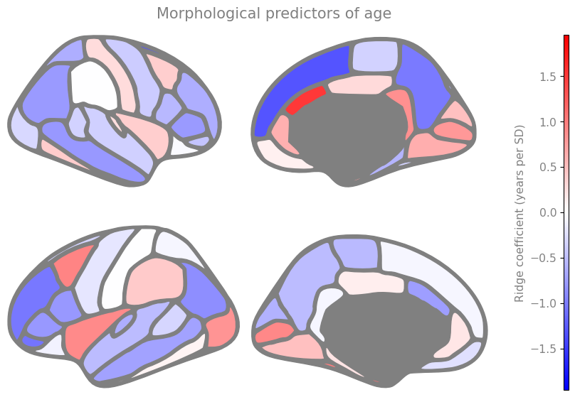

Reducing Complexity in Action#
Scikit-learn implements all the methods from the theory page behind one consistent interface. Here we apply them to the IXI data and see what controlling complexity actually buys.
Throughout this page we use the same 100 participants and the same 5-fold cross-validation, so the numbers are comparable with each other. They are not directly comparable with chapter 3, which used a different 80 participants and therefore a different baseline — which is why every table below carries its own.
import numpy as np
import pandas as pd
import seaborn as sns
import matplotlib.pyplot as plt
from sklearn.linear_model import LinearRegression, Ridge, Lasso
from sklearn.feature_selection import SelectKBest, f_regression
from sklearn.decomposition import PCA
from sklearn.cross_decomposition import PLSRegression
from sklearn.preprocessing import StandardScaler
from sklearn.pipeline import Pipeline
from sklearn.model_selection import cross_val_predict, KFold
from sklearn.metrics import mean_absolute_error
DATA_URL = "https://raw.githubusercontent.com/pni-lab/predmod_lecture/master/ex_data/IXI/ixi.csv"
ixi = pd.read_csv(DATA_URL).sample(frac=1, random_state=42).reset_index(drop=True)
TARGET = 'Age'
FEATURES = [c for c in ixi.columns if c.endswith('_volume')]
df_cv = ixi.iloc[:100] # the participants we cross-validate on
df_ext = ixi.iloc[100:200] # a separate, non-overlapping set used once, further below
cv = KFold(n_splits=5)
print(f'cross-validation set: n={len(df_cv)} external set: n={len(df_ext)} overlap: '
f'{len(set(df_cv.index) & set(df_ext.index))}')
cross-validation set: n=100 external set: n=100 overlap: 0
Warning
That last check is not decoration. df.iloc[:100] and df.iloc[100:200] are disjoint, but the
very similar-looking df.loc[:100] and df.loc[100:200] are not: label-based slicing
includes both endpoints, so participant 100 would appear in both sets. When two datasets are
supposed to be independent, verify it rather than assume it.
Two reference points#
Every result below is judged against two things: the trivial baseline, and an unregularized linear model using all 68 features — the disaster from chapter 3.
baseline_mae = mean_absolute_error(df_cv[TARGET], np.full(len(df_cv), df_cv[TARGET].mean()))
ols_predictions = cross_val_predict(LinearRegression(), X=df_cv[FEATURES], y=df_cv[TARGET], cv=cv)
ols_mae = mean_absolute_error(df_cv[TARGET], ols_predictions)
print(f'baseline (predict the mean age) : {baseline_mae:.2f} years')
print(f'ordinary least squares, all features : {ols_mae:.2f} years')
baseline (predict the mean age) : 14.67 years
ordinary least squares, all features : 23.45 years
As expected, the unregularized model is far worse than predicting nothing at all. Let’s fix that.
Selecting the k best features#
The simplest reduction: keep only the features most strongly associated with age.
Because this step looks at the target, doing it on the data we then cross-validate would be
cheating (the next page shows exactly how much). For now we sidestep the problem
by selecting the features on the separate 100 participants in df_ext, and only then applying
that choice to df_cv.
selector = SelectKBest(score_func=f_regression, k=5).fit(X=df_ext[FEATURES], y=df_ext[TARGET])
selected = [f for f, keep in zip(FEATURES, selector.get_support()) if keep]
print('features selected on the external set:')
for f in selected:
print(' ', f)
predictions = cross_val_predict(LinearRegression(), X=df_cv[selected], y=df_cv[TARGET], cv=cv)
kbest_mae = mean_absolute_error(df_cv[TARGET], predictions)
print(f'\nSelectKBest(5) + linear regression: {kbest_mae:.2f} years')
features selected on the external set:
lh_parsorbitalis_volume
rh_parsopercularis_volume
rh_parstriangularis_volume
rh_rostralmiddlefrontal_volume
rh_superiorfrontal_volume
SelectKBest(5) + linear regression: 11.37 years
From catastrophic to useful, by throwing away 63 of the 68 features. That is the whole idea of this chapter in one number.
Note
Note the fit / transform split that scikit-learn objects offer: fit learns something from
one
dataset — here, which features to keep — and transform then applies what was learned to another
(we use get_support() above only to print the names). Nearly every
scikit-learn object works this way, and keeping the two apart is what makes an honest separation
of training and test data possible. fit_transform does both at once on the same data — useful,
and a frequent source of leakage.
Still, discarding 63 features that each carry a little information feels wasteful. What if we could compress them instead?
PCA and PLS#
PCA condenses correlated features into a smaller number of components. It never looks at the
target, so — unlike feature selection — it is safe to fit inside a simple pipeline without any
external dataset. We ask for 5 components, to keep the comparison with SelectKBest(5) fair.
pca_model = Pipeline([
('standardize', StandardScaler()),
('reduce', PCA(n_components=5)),
('regression', LinearRegression()),
])
predictions = cross_val_predict(pca_model, X=df_cv[FEATURES], y=df_cv[TARGET], cv=cv)
pca_mae = mean_absolute_error(df_cv[TARGET], predictions)
print(f'PCA(5) + linear regression: {pca_mae:.2f} years')
PCA(5) + linear regression: 11.04 years
A Pipeline chains steps together into a single estimator. This is not a stylistic preference:
when the pipeline is cross-validated, scikit-learn refits every step on each training fold, so
the scaling and the PCA rotation are learned without ever seeing the held-out participants. We
will lean on this heavily from chapter 5 onwards.
PLS does the same kind of compression, but aims its components at the target:
pls_model = Pipeline([
('standardize', StandardScaler()),
('regression', PLSRegression(n_components=5)),
])
predictions = cross_val_predict(pls_model, X=df_cv[FEATURES], y=df_cv[TARGET], cv=cv).ravel()
pls_mae = mean_absolute_error(df_cv[TARGET], predictions)
print(f'PLS(5): {pls_mae:.2f} years')
PLS(5): 10.84 years
Ridge and LASSO#
Finally, the regularized models, which keep all 68 features but make large coefficients expensive.
Both go into a pipeline behind a StandardScaler, for the reasons given in
the theory section: a penalty on coefficients is meaningless if the
features are on different scales.
ridge_model = Pipeline([('standardize', StandardScaler()), ('regression', Ridge(alpha=100))])
lasso_model = Pipeline([('standardize', StandardScaler()), ('regression', Lasso(alpha=1.0))])
ridge_mae = mean_absolute_error(
df_cv[TARGET], cross_val_predict(ridge_model, X=df_cv[FEATURES], y=df_cv[TARGET], cv=cv))
lasso_mae = mean_absolute_error(
df_cv[TARGET], cross_val_predict(lasso_model, X=df_cv[FEATURES], y=df_cv[TARGET], cv=cv))
print(f'Ridge(alpha=100): {ridge_mae:.2f} years')
print(f'LASSO(alpha=1) : {lasso_mae:.2f} years')
Ridge(alpha=100): 10.47 years
LASSO(alpha=1) : 10.31 years
Important
Those two alpha values were picked by hand, and we have no principled reason for them. Worse, if we now tried a dozen values each and reported the best, the resulting number would be optimistic for reasons we are about to make painfully concrete on the next page. Tuning hyperparameters honestly is the subject of chapter 5. Until then, take every alpha on this page as arbitrary.
Comparison#
results = pd.DataFrame({
'model': ['baseline (mean age)', 'OLS, all 68 features', 'SelectKBest(5)', 'PCA(5)',
'PLS(5)', 'Ridge(alpha=100)', 'LASSO(alpha=1)'],
'MAE': [baseline_mae, ols_mae, kbest_mae, pca_mae, pls_mae, ridge_mae, lasso_mae],
})
ax = sns.barplot(y='model', x='MAE', data=results, color='steelblue')
ax.axvline(baseline_mae, ls='--', color='0.4')
plt.xlabel('cross-validated mean absolute error (years)')
plt.ylabel('')
plt.show()
results.round(2)

| model | MAE | |
|---|---|---|
| 0 | baseline (mean age) | 14.67 |
| 1 | OLS, all 68 features | 23.45 |
| 2 | SelectKBest(5) | 11.37 |
| 3 | PCA(5) | 11.04 |
| 4 | PLS(5) | 10.84 |
| 5 | Ridge(alpha=100) | 10.47 |
| 6 | LASSO(alpha=1) | 10.31 |
Every complexity-reducing method beats both reference points, and they land close to one another. This is a common and slightly deflating finding: once complexity is under control, how you control it usually matters far less than that you control it. The 68-feature model went from useless to competitive without a single new measurement — just by being prevented from memorizing.
The differences between the methods are small enough here to be within the noise of a 100-participant cross-validation, so resist the temptation to declare a winner.
Which regions drive the prediction?#
Ridge and LASSO are still linear models, so their coefficients can be read as a kind of feature importance: how much the prediction moves per standard deviation of each region.
To look at coefficients we need a single model, but cross-validation produced five. So we finalize the model, as discussed in chapter 3, by refitting the identical pipeline — the same alpha, the same scaler — on all 100 participants.
final_model = Pipeline([('standardize', StandardScaler()), ('regression', Ridge(alpha=100))])
final_model.fit(X=df_cv[FEATURES], y=df_cv[TARGET])
coefficients = pd.Series(final_model.named_steps['regression'].coef_, index=FEATURES)
coefficients.sort_values().head(5)
rh_frontalpole_volume -1.956764
rh_superiorfrontal_volume -1.311424
lh_parsorbitalis_volume -1.068230
lh_rostralmiddlefrontal_volume -1.026133
rh_precuneus_volume -1.013041
dtype: float64
Warning
The finalized model must use exactly the settings that were cross-validated. Refitting with a different alpha would give you a model whose performance you have never estimated — the reported error would belong to a different model from the one you publish.
Painted onto the cortex:
def to_ggseg_label(column_name):
hemisphere, region, _ = column_name.split('_')
return region + ('_left' if hemisphere == 'lh' else '_right')
importance = {to_ggseg_label(c): v for c, v in coefficients.items()}
limit = np.abs(coefficients).max()
# ggseg 0.1 predates matplotlib 3.9 and calls matplotlib.cm.get_cmap, which some matplotlib
# versions no longer provide; restore it so the brain plot keeps working either way
import matplotlib.cm
if not hasattr(matplotlib.cm, 'get_cmap'):
matplotlib.cm.get_cmap = matplotlib.colormaps.get_cmap
try:
import ggseg
ggseg.plot_dk(importance, cmap='bwr', vminmax=[-limit, limit], figsize=(10, 5),
background='w', edgecolor='gray', bordercolor='gray',
ylabel='Ridge coefficient (years per SD)',
title='Morphological predictors of age')
except Exception:
# ggseg missing or incompatible with the installed matplotlib: plain bar plot instead
ordered = coefficients.sort_values()
plt.figure(figsize=(6, 12))
sns.barplot(x=ordered.values, y=ordered.index, color='steelblue')
plt.xlabel('Ridge coefficient (years per SD)')
plt.tight_layout()
plt.show()

Caution
Resist reading this map as “these regions are where ageing happens”. Ridge distributes weight across correlated features, so a region can receive a large coefficient because of what it shares with its neighbours rather than anything specific to it — and with 68 collinear features, the particular split of weight between them is unstable. The map describes this fitted model, not the brain. Chapter 7 takes this question seriously.
Exercise 4.1
Try SelectKBest(k=...) and PCA(n_components=...) with 1, 2, 10, 20 and 40. How does
cross-validated performance change, and where is the optimum?
Solution
for k in [1, 2, 5, 10, 20, 40]:
model = Pipeline([('standardize', StandardScaler()),
('reduce', PCA(n_components=k)),
('regression', LinearRegression())])
pred = cross_val_predict(model, X=df_cv[FEATURES], y=df_cv[TARGET], cv=cv)
print(k, round(mean_absolute_error(df_cv[TARGET], pred), 2))
You will find a broad optimum with a steep climb on the right — the complexity curve from chapter 3, traced with a different dial. Now notice what you have just done: you chose a hyperparameter by looking at cross-validated performance. Keep that thought for the next page.
Exercise 4.2
Finalize the LASSO model instead of the Ridge one and compare the coefficients. How many regions does it use?
Solution
final_lasso = Pipeline([('standardize', StandardScaler()), ('regression', Lasso(alpha=1.0))])
final_lasso.fit(X=df_cv[FEATURES], y=df_cv[TARGET])
lasso_coefficients = pd.Series(final_lasso.named_steps['regression'].coef_, index=FEATURES)
print((lasso_coefficients != 0).sum(), 'regions used')
print(lasso_coefficients[lasso_coefficients != 0].sort_values())
LASSO keeps a handful of regions and sets the rest to exactly zero — a far more readable model,
at essentially the same predictive performance. Whether the regions it picked are the important
ones is another matter: re-run it on ixi.iloc[100:200] and see how much the list changes.
Exercise 4.3
Why did we have to use a separate dataset for SelectKBest, when PCA could go straight into the
pipeline?
Solution
Because SelectKBest uses the target and PCA does not. Any step that looks at y must only
ever see the training part of a fold — otherwise information about the held-out participants’
ages influences the model that predicts them.
The external dataset is not actually the best solution, merely the simplest one to explain. In
chapter 5 we put
SelectKBest inside the pipeline, where it is refitted per fold, and recover the 100 participants
we spent here.
We now have several ways to control complexity, each with a dial — k, n_components, alpha —
and no honest way to set them. The next page explains why the obvious approach
does not work, and introduces the second villain of this book.